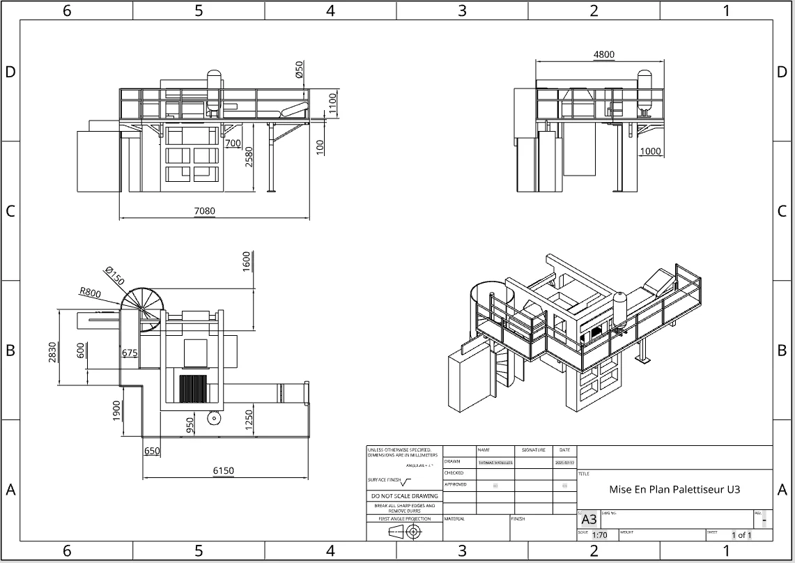
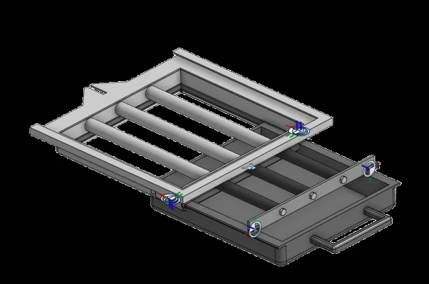
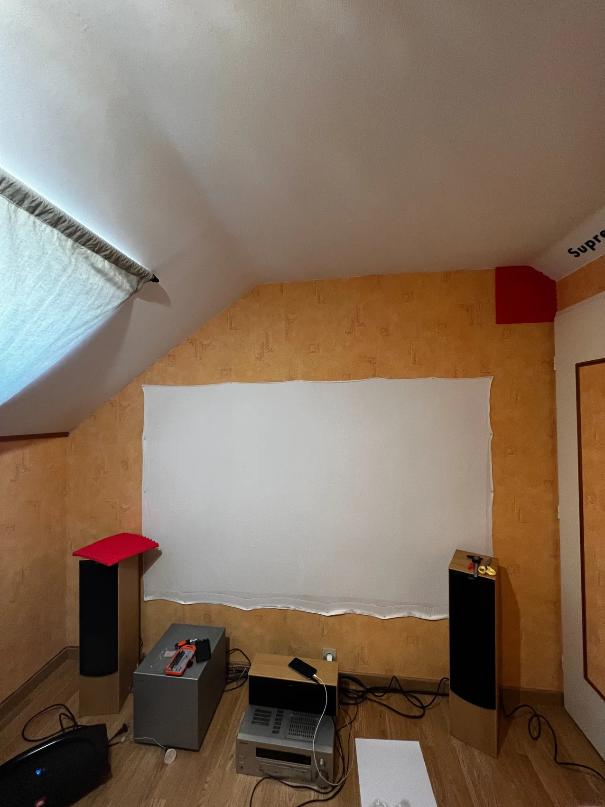
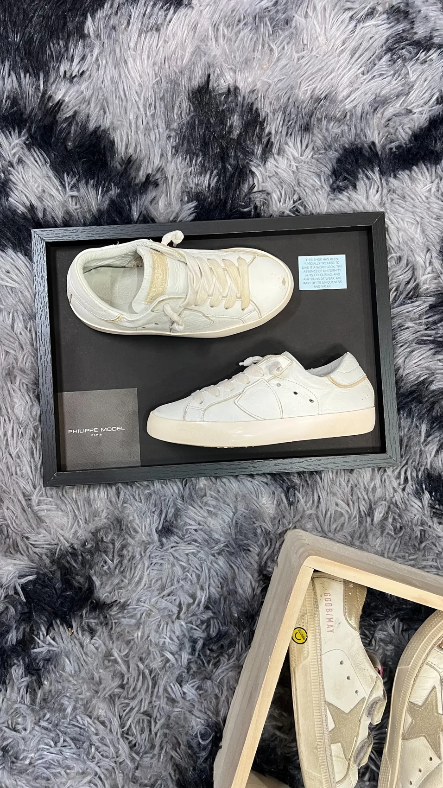
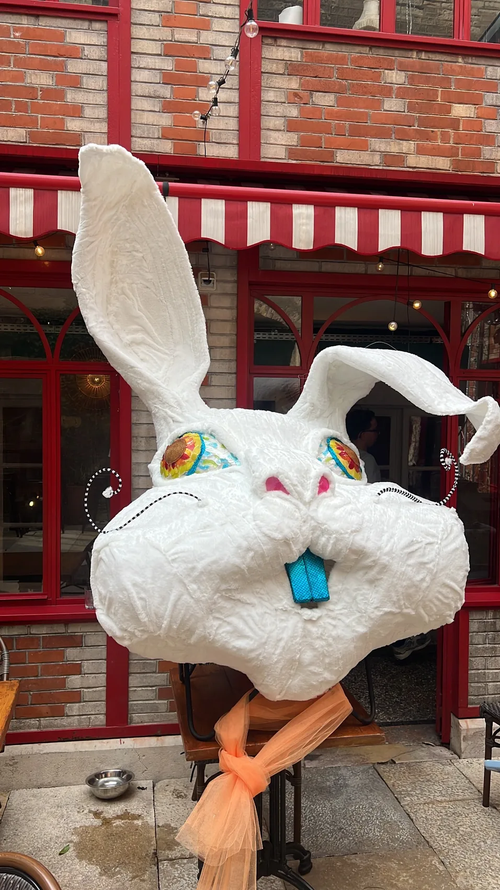

Pulse
PulseInstallation son & lumière en salle de réception
Configuration complète pour événement avec sonorisation, lumières et implantation propre.
Réalisations & études
Installations son et lumière, aménagements, CAO, mise en plan, SMED, flux, outils, remise en état d’éléments et supports spécifiques. Les exemples ci-dessous montrent le type d’intervention possible selon le besoin.
PulseConfiguration complète pour événement avec sonorisation, lumières et implantation propre.
 Pulse
PulseMontage technique, câblage, installation DJ et préparation du lieu.
 Pulse
PulseMatériel dimensionné selon le lieu, la jauge et le rendu recherché.
 Pulse
PulseInstallation discrète, lumière d’ambiance et cohérence avec le décor existant.
 Pulse
PulseCréation d’une ambiance visuelle plus immersive avec effets et couleurs.
 Pulse
PulseInstallation son adaptée à une scène, une salle ou un événement associatif.
 Pulse
PulseIntégration audio, traitement visuel et ambiance dédiée dans un espace privé.
 Process
ProcessPrises de cotes, réflexion d’accès, modélisation 3D et intégration autour d’une machine existante.
 Process
ProcessUne solution conçue pour s’intégrer à l’environnement réel, aux accès et à la maintenance.

ProcessPlans, vues, cotes et documents utiles pour échanger avec les équipes ou fournisseurs.
 Process
ProcessVisualisation des flux, contraintes d’encombrement, accès et zones d’intervention.

ProcessConception de solutions adaptées lorsqu’un standard ne répond pas correctement au besoin.
 Process
ProcessObservations terrain, classement des pertes, gains potentiels et plan d’actions priorisé.
 Process
ProcessComprendre les flux, stocks, temps d’attente et étapes à améliorer.

AménagementAnalyse d’un lieu, contraintes existantes et préparation d’un nouvel aménagement.
 Aménagement
AménagementRemplacement, intégration et amélioration du rendu général d’une salle ou d’un lieu.
 Aménagement
AménagementÉtude d’intégration possible pour vitrines, commerces, showrooms ou lieux publics.
 Supports
SupportsNettoyage, préparation, amélioration ou remplacement d’éléments selon le besoin.
 Supports
SupportsCréation de pièces ou objets adaptés à un lieu, une ambiance ou une contrainte particulière.

SupportsValorisation d’objets, décoration, supports spécifiques ou éléments de présentation.

ÉvénementDécor, mise en scène ou élément visuel destiné à renforcer l’ambiance d’un lieu.
Prochain projet
Le principe de Pulse & Process est justement de partir du besoin réel : événement, process, lieu, outil, support ou amélioration spécifique.
Expliquer le besoin